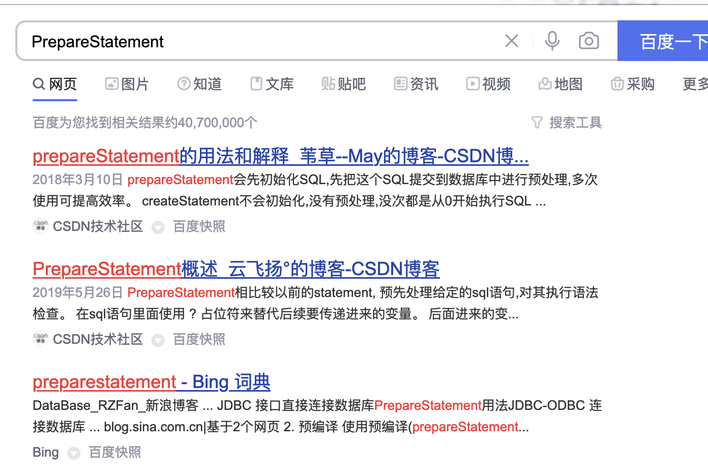
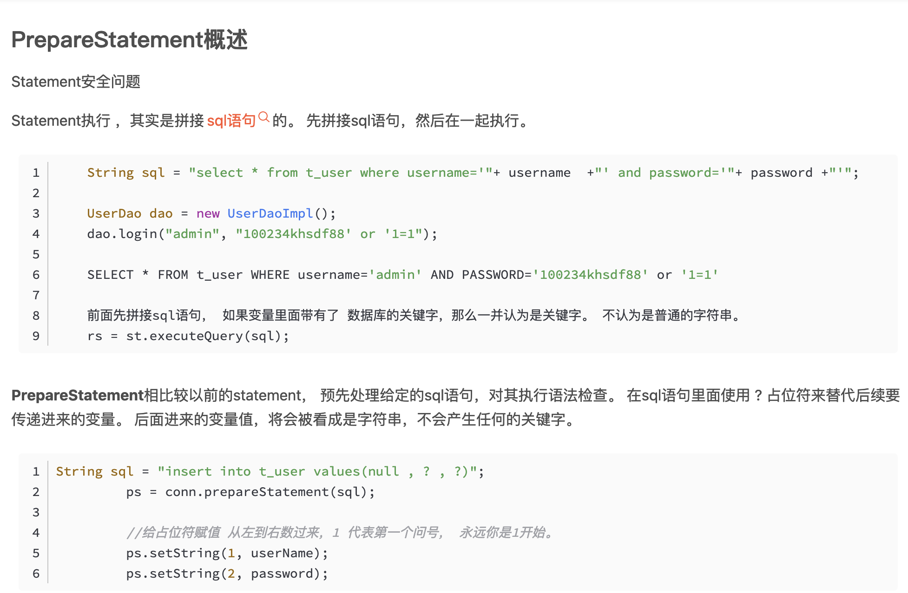
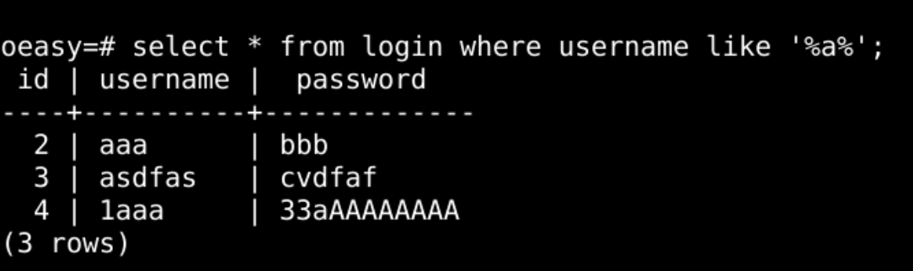
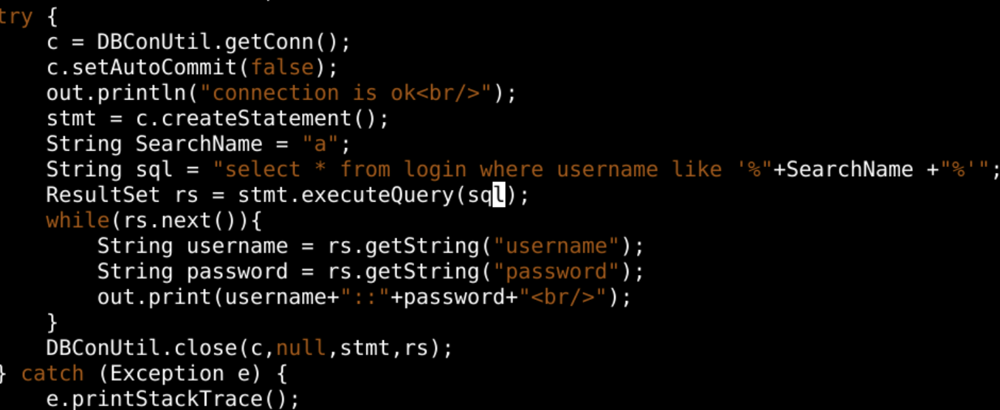
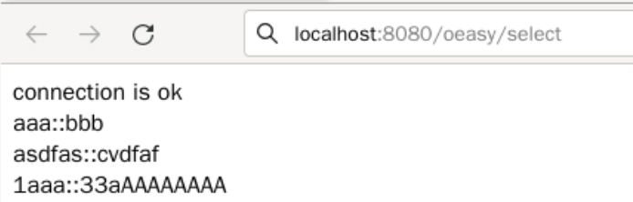
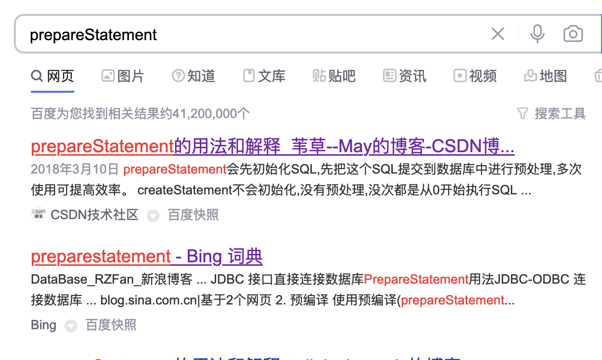
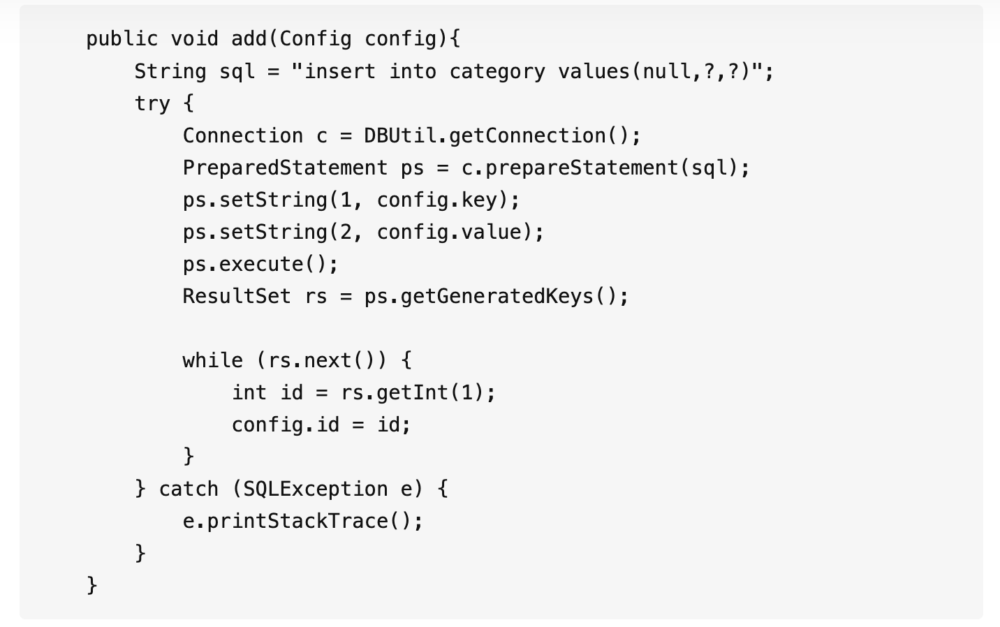
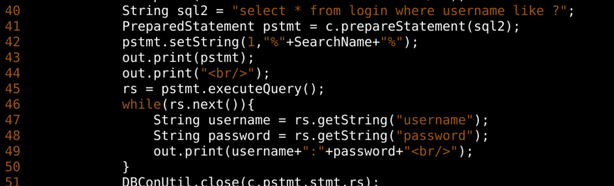
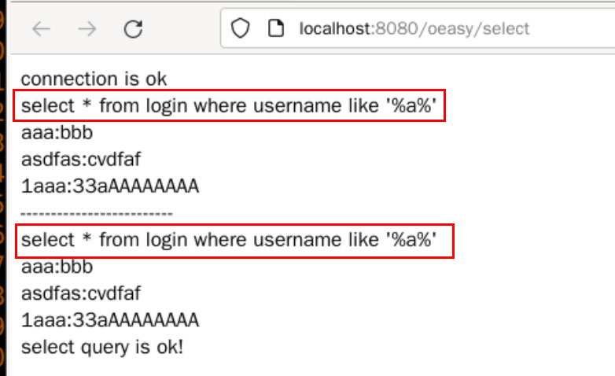
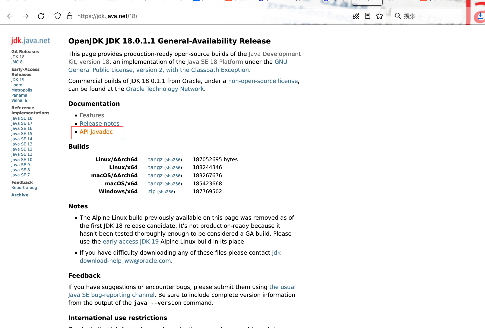
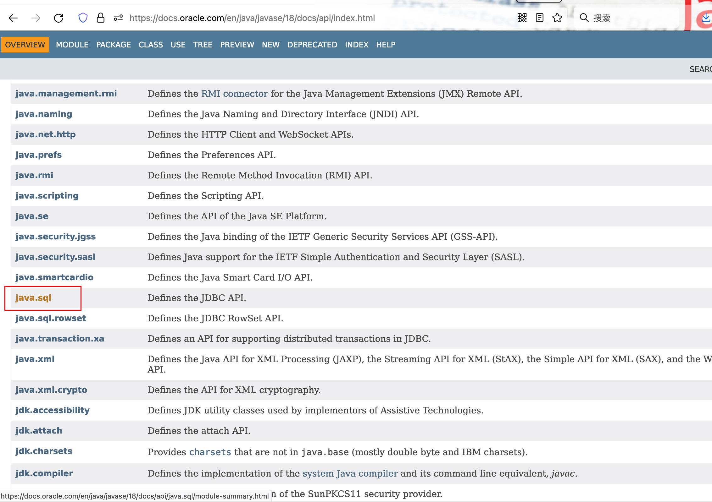
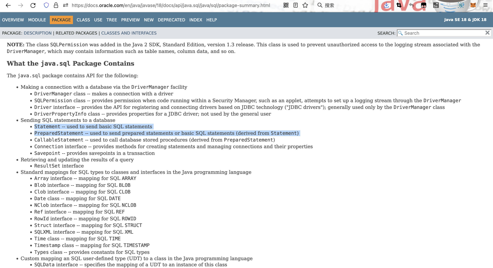
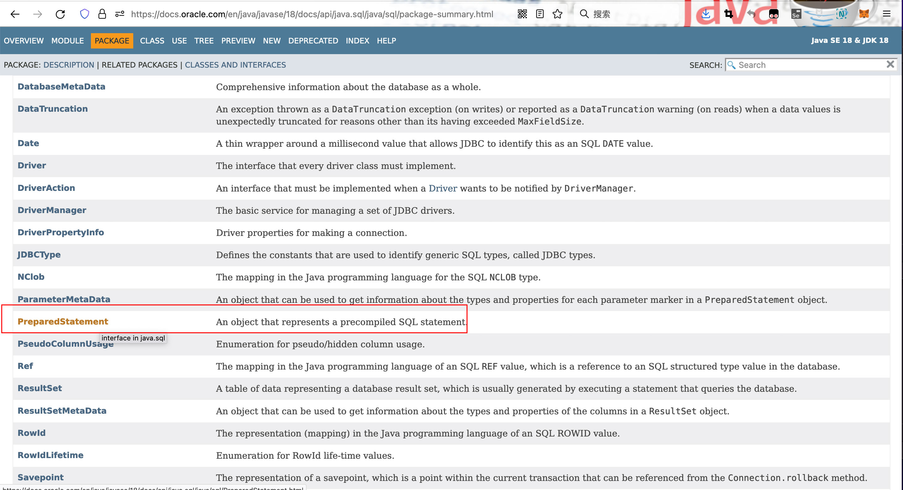
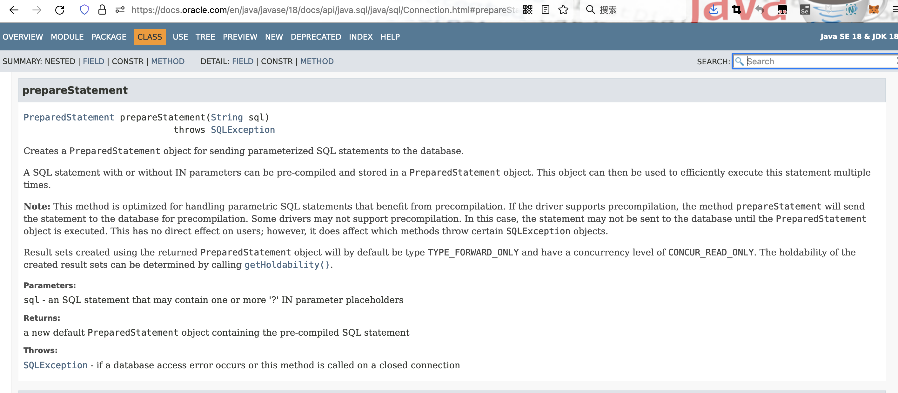
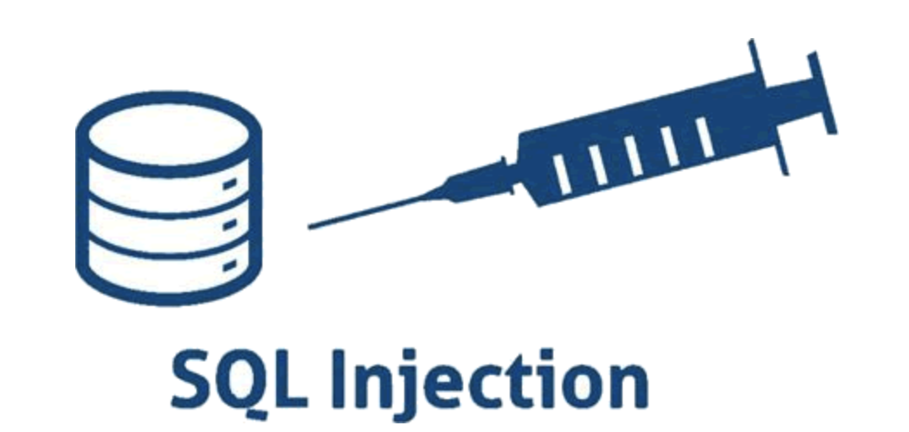
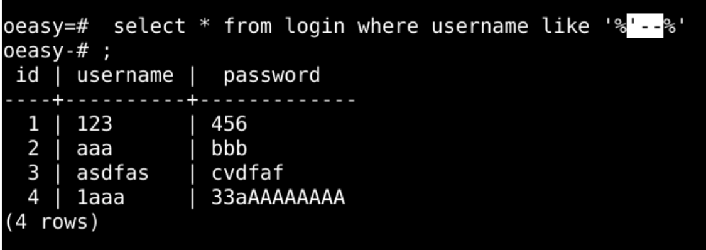
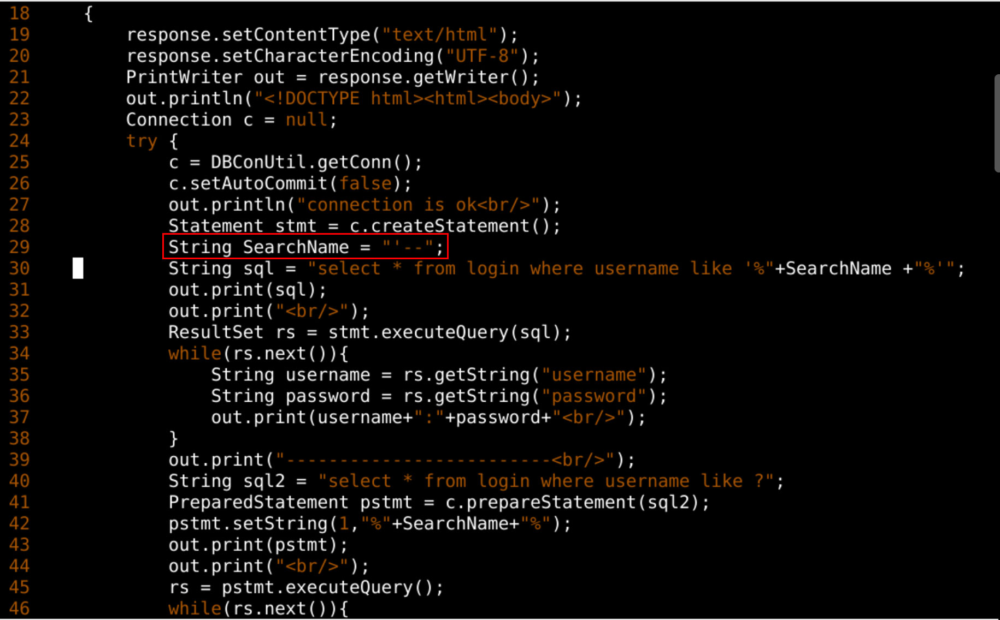
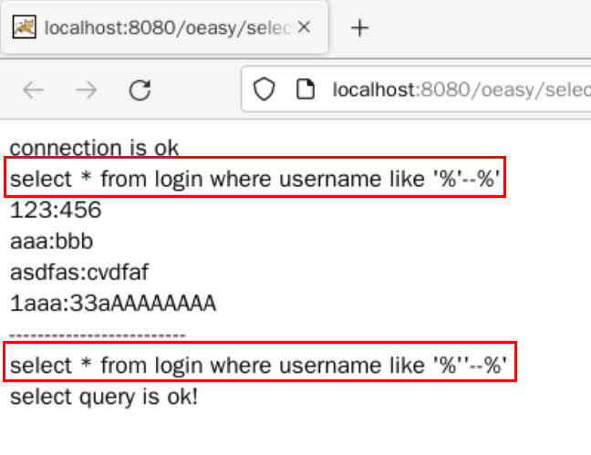
import java.sql.Connection;
import java.sql.DriverManager;
import java.sql.ResultSet;
import java.sql.PreparedStatement;
import java.io.IOException;
import java.io.PrintWriter;
import jakarta.servlet.ServletException;
import jakarta.servlet.http.HttpServlet;
import jakarta.servlet.http.HttpServletRequest;
import jakarta.servlet.http.HttpServletResponse;
public class SelectServlet extends HttpServlet {
private static final long serialVersionUID = 1L;
@Override
public void doGet(HttpServletRequest request,
HttpServletResponse response)
throws IOException, ServletException
{
response.setContentType("text/html");
response.setCharacterEncoding("UTF-8");
PrintWriter out = response.getWriter();
out.println("<!DOCTYPE html><html><body>");
Connection c = null;
try {
c = DBConUtil.getConn();
c.setAutoCommit(false);
String SearchName = "";
String sql2 = "select * from login where username like ?";
PreparedStatement pstmt = c.prepareStatement(sql2);
pstmt.setString(1,"%"+SearchName+"%");
ResultSet rs = pstmt.executeQuery();
while(rs.next()){
String username = rs.getString("username");
String password = rs.getString("password");
out.print(username+":"+password+"<br/>");
}
DBConUtil.close(c,pstmt,null,rs);
} catch (Exception e) {
e.printStackTrace();
System.err.println(e.getClass().getName() + ": " + e.getMessage());
}
out.println("select query is ok!<br/>");
out.println("</body></html>");
}
}